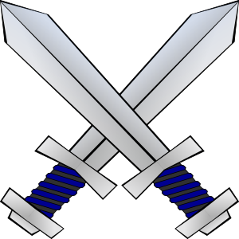

|
Tetra Blade's |
 | |||
| Asian Swords | Type os Asain Swords are straight, double edged Chinese longswords(Jian), single edged Chinese Sabers(Dao) and Katana's |
| Egyptian Swords | Egyptian Swords were Bronze Weapons. the swords were usually elongated Daggers and dirks. |
| Foils and Rapiers | Foils and Rapiers are long, thin bladed swords mainly used for thrusting. civilian swords that were mainly used for dueling |
| Two Handed Swords, Claymores, and Flamberges | Two handed sword also know as "Great Swords" were weapons that usually ranged up to 6' long. Claymores are two handed swords mainly used by Scottish Highlanders in the 16th Century. Flamberges where great swords with scalloped or serrated edges. |
| Longswords and Bastard Swords | Longswords are a type of sword that usually ranged with the blade over 28" long. They are swords that are also called one handed swords and when used in armies usually where used with a shield or buckler. Bastard Swords are very similar to longswords but were less pointy. |
| Scimitars, Falchions and Sabers | All about 3' long these types of swords all have a distinct curve to them which is was distinguishes these swords from other types of swords. These type of swords ususally consisted of a curved heavy blade so allow for very strong swings to deliver very devastating blows. |
| Short Swords | Short Swords are Short swords most are around 2' long and were mainly used with a shield or another 1 handed weapon. These swords were favored in the Roman, Greek, and other ancient world armies/warriors. |